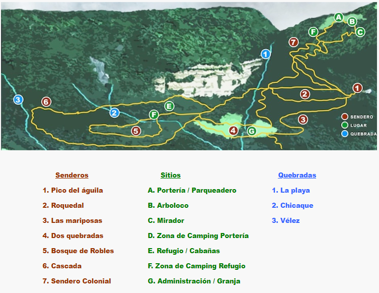
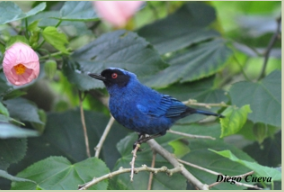

Diviértete en Chicaque con nuestras actividades de aventura. El espectacular paisaje de Chicaque y los más altos estándades de seguridad te harán vivir experiencias inolvidables. En la actualidad contamos con las actividades de Tirolesa y Arborismo (Canopy)
En Chicaque encontrarás más de 20 kilómetros de senderos ecológicos, los cuales te llevarán a diferentes puntos de interés dentro del parque.
Las puertas de Chicaque están abiertas a familias, amigos, grupos de colegios y universidades, empresas y científicos. Nuestros servicios están disponibles para enriquecer su visita al parque y hacer de esta una experiencia memorable. Contamos con dos restaurantes, guianzas dirigidas, cabalgatas, salidas pedagógicas para para colegios y universidades, e incluso programas para empresas que deseen realizar sus actividades de integración, fiestas de fin de año, etc.
Si deseas mas información Click Aquí
